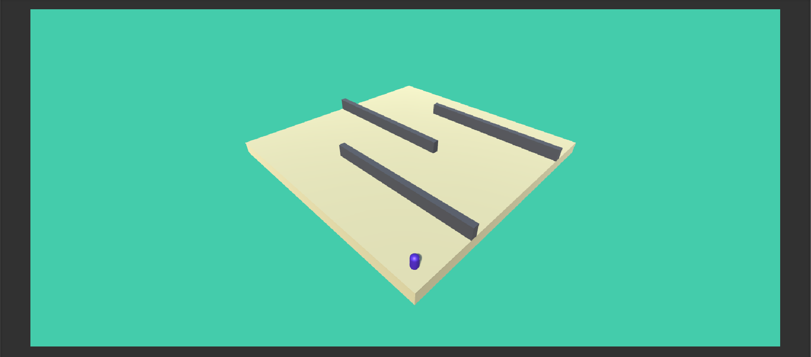
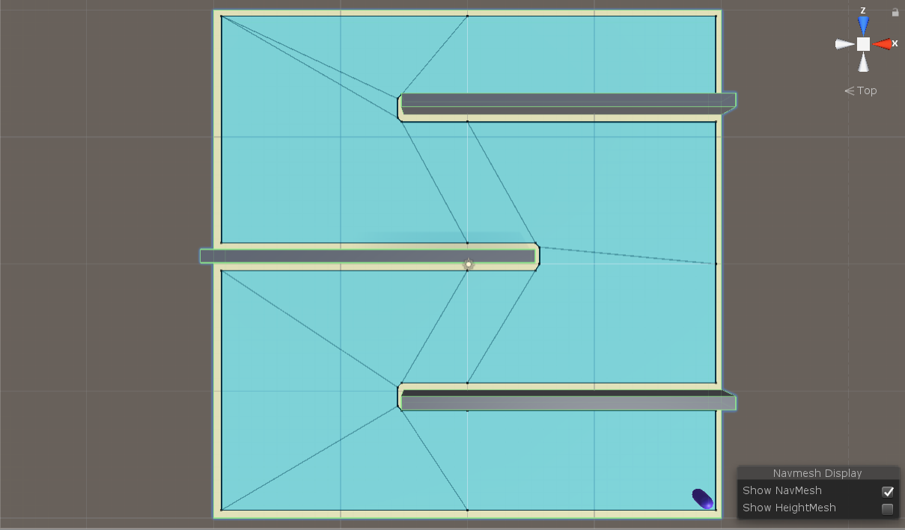
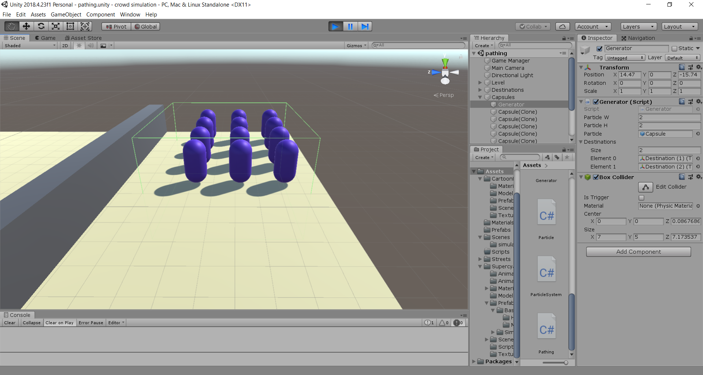

Pathing
For the milestone, there were two things that I wanted to tackle: the pathing of the models and then the scenery.
To create the pathing, I set up a working environment with a capsule as the model and basic walls and floor.

Unity has a navigation mesh feature, in which the platform will pre-compute a map of walkable paths for agents. In the following top-down image, the blue area is the walkable section for a humanoid shaped capsule. Then, by setting the capsule as a Nav Mesh Agent, it is trivial to set a start and end destination and have a path computed for the agent to follow.

Although creating a path between point A and B is simple, it will be much more complicated in the project later to try to integrate red walking lights, cars, and other obstacles that would prevent smooth pathtracing.
Lastly, to aid with the testing purposes, I created a generator that would fill a box collider with capsule models. Take note of the green box in the image below, and the on-the-spot generated capsules.
